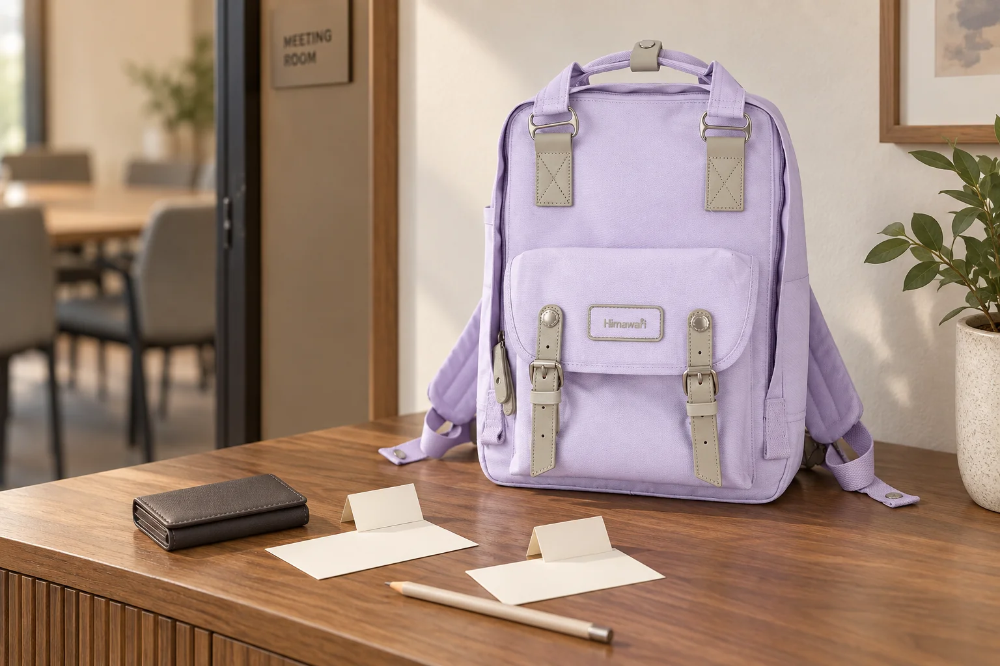

백팩 속 명함, 어디서 만났는지도 함께 남기기

모임에서 명함을 몇 장 받았습니다. 집에 돌아와 다시 보면 이름과 회사는 읽을 수 있어도 어떤 이야기를 나눴는지는 희미할 수 있습니다. 가방에 넣기 전에 그 만남을 떠올릴 단서 하나를 남겨보세요. 길게 기록하기보다 명함과 메모가 서로 떨어지지 않게 두는 것이 시작입니다.
내 명함과 받은 명함을 나눕니다
꺼내 건넬 내 명함과 새로 받은 명함이 같은 더미에 섞이지 않도록 명함집의 앞뒤나 별도 칸을 정합니다. 받은 즉시 방향을 맞춰 넣으면 다음 대화에서 내 명함을 찾다가 남의 명함을 꺼내는 일을 피할 수 있습니다. 명함집에 구분할 칸이 없다면 얇은 종이 한 장을 사이에 두고, 어느 쪽이 받은 것인지 스스로 기억할 표시를 남겨보세요.
대화가 끝난 뒤 단서를 한 줄 적습니다
잠깐 자리를 옮겨 쉬는 때, 날짜와 행사 이름 또는 함께 이야기한 주제를 작은 메모지에 적습니다. 예를 들어 “오전 모임, 동네 서점 이야기” 정도면 충분합니다. 명함 뒷면에 바로 쓰기 어렵거나 종이가 코팅되어 있다면 별도 메모를 사용하세요. 들은 내용을 과장하거나 상대의 의도를 추측해서 적기보다 실제 대화에서 기억하는 단어를 남깁니다.
명함 한 장과 메모 한 장을 짝지어 둡니다
여러 명을 만난 날에는 마지막에 기억을 한꺼번에 복원하려 하지 말고 받은 순서와 메모 순서를 맞춥니다. 작은 봉투를 쓴다면 명함과 해당 메모를 같은 묶음에 넣어보세요. 백팩 바깥에 이름이나 연락처가 보이게 꽂아 두지 않고, 명함집을 열어 촬영한 사진도 공개하기 전에 내용을 살핍니다. 여기서 쓰는 메모는 자신의 만남을 정리하는 용도입니다.
귀가 후에는 메모가 맞는지 다시 읽습니다
가방에서 명함집을 꺼내 이름과 메모의 짝을 대조합니다. 기억이 불확실한 내용은 사실처럼 덧붙이지 말고 확인이 필요하다고 남기세요. 계속 보관할 명함은 정해 둔 자리에 옮겨 다음 외출 때 새로 받은 것과 섞이지 않게 합니다. 사진의 No.194L은 제조사 카탈로그 기준 가로 28 × 세로 39 × 폭 15cm입니다. 라벤더 몸체와 밝은 배색 부자재는 실제 원본을 따랐으며, 사진 속 명함집은 제품 구성품이 아닙니다.
참고·안내
- Himawari No.194L 제품 정보
- 실제 Himawari No.194L 원본을 참조한 AI 연출 사진입니다. 명함집과 메모지는 별도 소품이며 실제 참석자나 연락처를 표현하지 않습니다.
자주 묻는 질문
명함 뒷면에 직접 메모해야 하나요?
종이 표면이나 상대방 명함의 디자인에 따라 별도 메모지를 써도 됩니다. 명함과 메모가 같은 사람의 기록으로 남도록 짝을 맞춰 두세요.
받은 명함을 가방에 계속 두어도 될까요?
귀가 후 새로 받은 명함과 메모를 함께 확인해 보관할 자리에 옮기면 다음 행사에서 받은 것과 구분하기 쉽습니다.